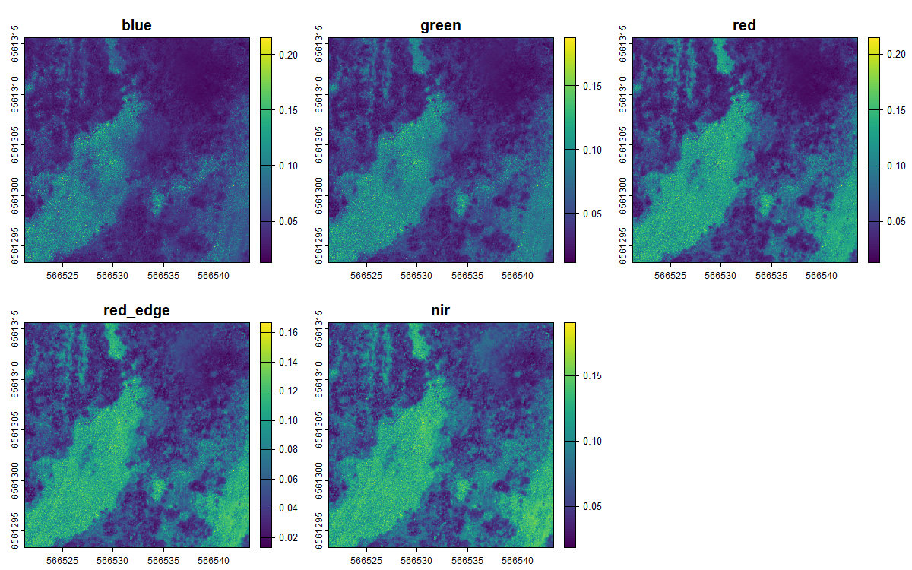
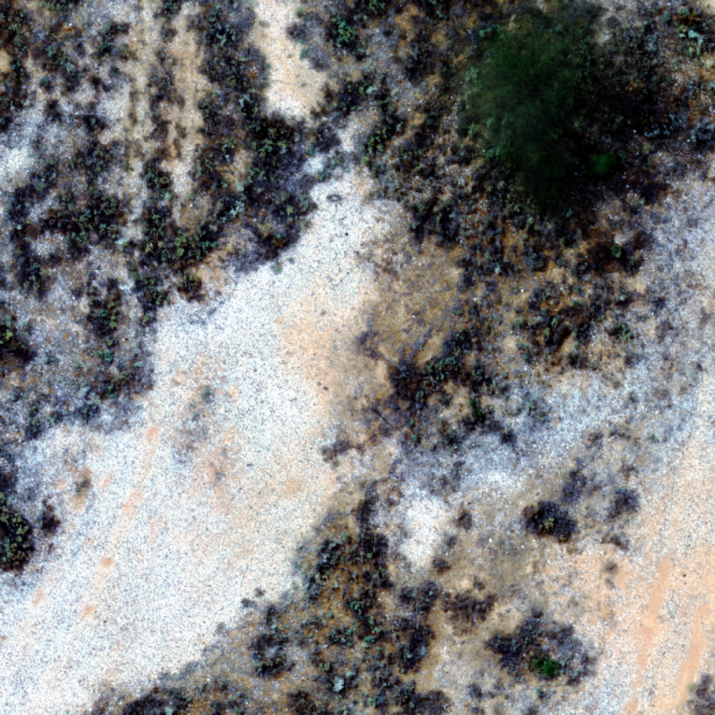

saltbush processes drone imagery to calculate spectral diversity values as part of the assessment of the ‘spectral variability hypothesis’ or the ‘spectral-biodiversity relationship’. This was specifically implemented to connect from-the-sky diversity with on-the-ground diversity as measured in the AusPlots project. There are functions to calculate on-the-ground diversity built on the ausplotsR and vegan packages. This package is aimed at making from-the-sky diversity methods development easier for researchers across the world.
Specifically we have used this package in a test in the Australian arid zone. The results suggest that some of the methods below perform much better than others. The code that reproduces that full analysis is available at adelegem/multispectral_drone_svh.
Installation
install.packages("remotes")
remotes::install_github("traitecoevo/saltbush", build_vignettes = TRUE)Workflow
From the sky: drone imagery to spectral diversity
-
create_multiband_image(): stack single-band reflectance TIFs into one multiband image -
find_optimum_thresholds(): (optional) choose NDVI/NIR thresholds from ground-truth points -
create_masked_raster(): mask out bare ground and shadow -
calculate_spectral_metrics(): CV, SV and CHV for each area of interest (AOI)
On the ground: survey data to taxonomic diversity
-
calculate_field_diversity(): species richness, Shannon, Simpson and more
Together: join the two by site or AOI to test the spectral-biodiversity relationship.
The example below runs every step on data bundled with the package, all from AusPlots site NSABHC0009 at Fowlers Gap, NSW. For more detail on each step, see vignette("saltbush").
1. Build a multiband image
For users using Pix4D mapper to pre-process imagery, single-band TIFs will be saved in a folder per site. You can optionally use this function to create a multiband image - each file name must be the band name or end with it, so Pix4D output such as NSABHC0009_transparent_reflectance_blue.tif works without renaming. Output files are named after the folder.
wavelengths <- c("blue", "green", "red", "red_edge", "nir")
band_dir <- system.file("extdata/create_multiband_image", package = "saltbush")
list.files(band_dir)
#> [1] "blue.tif" "green.tif" "nir.tif" "red.tif" "red_edge.tif"
multiband <- create_multiband_image(band_dir,
desired_band_order = wavelengths,
output_dir = tempdir(),
make_plot = FALSE)The five bands of the resulting image:

and as a true-colour composite:

2. Choose masking thresholds (optional)
If you have ground-truth points labelled by class (e.g. vegetation vs bare ground), find_optimum_thresholds() finds the NDVI or NIR value that best separates them, per site:
ndvi_thresholds <- find_optimum_thresholds(ground_truth,
site_col = "site",
band_or_index_col = "ndvi",
class_col = "class",
class_value = c("bare_ground", "rocks"))Otherwise, pass single threshold values to the next step, as below.
3. Mask out non-vegetation
The image above is a small clip, so from here on we use a bundled image of the whole NSABHC0009 plot (aggregated to 1.5 m pixels to keep the package small). Pixels with NDVI below ndvi_threshold (bare ground) or NIR below nir_threshold (shadow) are set to NA:
plot_image <- system.file("extdata/example/NSABHC0009_aggregated.tif",
package = "saltbush")
create_masked_raster(plot_image,
output_dir = tempdir(),
ndvi_threshold = 0.02,
nir_threshold = 0.04)
masked_image <- file.path(tempdir(), "NSABHC0009_aggregated_masked.tif")4. Calculate spectral metrics
calculate_spectral_metrics() crops and masks each image to its AOI polygons and calculates the metrics directly from the raster. Rasters and AOI files are matched by site name, the start of the file name up to the first _ or . (here NSABHC0009). AOIs can be shapefiles, GeoJSON or GeoPackage, and are reprojected to the image’s coordinate system if needed.
aoi_file <- system.file("extdata/aoi/NSABHC0009_aoi.shp", package = "saltbush")
spectral <- calculate_spectral_metrics(masked_image, aoi_file, wavelengths)
spectral
#> site aoi_id CV SV CHV image_type
#> 1 NSABHC0009 1 0.2502227 0.0008364104 1.544037e-10 masked5. Calculate field diversity
For AusPlots point-intercept data (e.g. from ausplotsR::get_ausplots()), the defaults work as is, each row in one point-observation, and dead material is excluded:
field <- calculate_field_diversity(ausplots_NSABHC0009)
field$taxonomic_diversity
#> site_unique site_location_name species_richness shannon_diversity
#> 1 NSABHC0009-58026 NSABHC0009 52 3.056908
#> 2 NSABHC0009-53604 NSABHC0009 38 2.843074
#> simpson_diversity pielou_evenness exp_shannon inv_simpson
#> 1 0.9203249 0.7736571 21.26171 12.55097
#> 2 0.9043699 0.7815826 17.16846 10.45696For other surveys, name the species column, any categories to exclude, and an abundance column such as percent cover or counts. Here, using the bundled example cover data:
head(cover_survey)
#> plot_id species cover_pct
#> 1 plot_A Atriplex vesicaria 18
#> 2 plot_A Maireana pyramidata 15
#> 3 plot_A Sclerolaena divaricata 12
#> 4 plot_A Enneapogon avenaceus 10
#> 5 plot_A Bare ground 35
#> 6 plot_A Litter 10
cover <- calculate_field_diversity(cover_survey,
aoi_cols = "plot_id",
species_col = "species",
exclude = c("Bare ground", "Litter"),
abundance_col = "cover_pct")
cover$taxonomic_diversity
#> plot_id species_richness shannon_diversity simpson_diversity pielou_evenness
#> 1 plot_A 4 1.3620209 0.7378512 0.9824904
#> 2 plot_B 3 0.5608217 0.2907986 0.5104820
#> 3 plot_C 2 0.5004024 0.3200000 0.7219281
#> exp_shannon inv_simpson
#> 1 3.904075 3.814628
#> 2 1.752112 1.410037
#> 3 1.649385 1.4705886. Bring them together
Join spectral and field diversity by site (or by AOI, if your field plots match your AOIs):
merge(spectral, field$taxonomic_diversity,
by.x = "site", by.y = "site_location_name")
#> site aoi_id CV SV CHV image_type
#> 1 NSABHC0009 1 0.2502227 0.0008364104 1.544037e-10 masked
#> 2 NSABHC0009 1 0.2502227 0.0008364104 1.544037e-10 masked
#> site_unique species_richness shannon_diversity simpson_diversity
#> 1 NSABHC0009-58026 52 3.056908 0.9203249
#> 2 NSABHC0009-53604 38 2.843074 0.9043699
#> pielou_evenness exp_shannon inv_simpson
#> 1 0.7736571 21.26171 12.55097
#> 2 0.7815826 17.16846 10.45696One site only shows the mechanics. Testing the relationship needs many sites, and the bundled images are too small for that. For a complete real-world analysis built on saltbush, see adelegem/multispectral_drone_svh.
Diversity metrics computed
Spectral diversity (from drone imagery):
- coefficient of variation (CV)
- spectral variance (SV)
- convex hull volume (CHV)
Taxonomic diversity (from survey data):
- species richness
- Shannon’s diversity index
- Simpson’s diversity index
- Pielou’s evenness
- exponential Shannon’s index
- inverse Simpson’s index